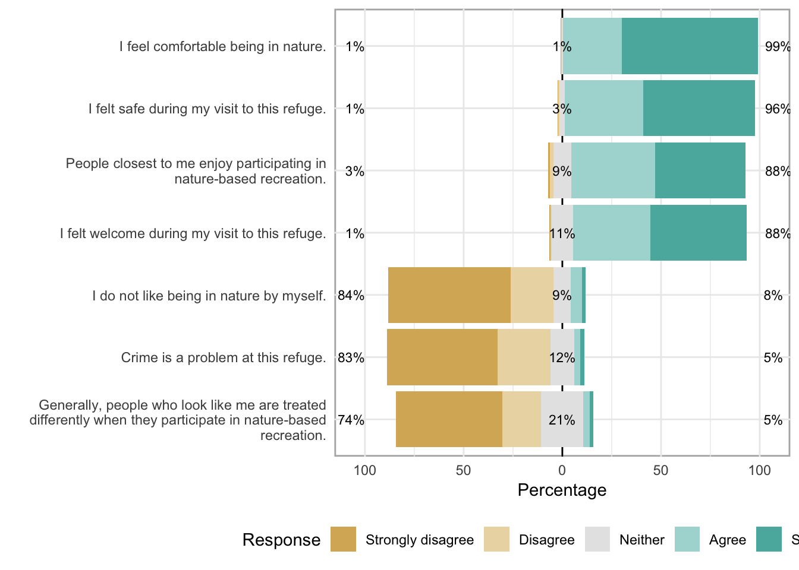

Appendix B: Survey Frequencies for Tennessee National Wildlife Refuge
Overall Satisfaction
Recreational Opportunities
Importance of Recreational Opportunities
Figure .: How important are the recreation opportunities?
Satisfaction with Recreational Opportunities

Figure .: How satisfied are you with the recreation opportunities?
Services and Facilities
Positive experiences are driven by first impressions of refuge facilities and people.
Importance of Facilities and Services
servicesImpTitle
Figure .: How important are the items?
Satisfaction with Facilities and Services

Figure .: Rate how satisfied you are with the way this refuge is managing each feature
Feeling Safe and Welcome
safeTitle 